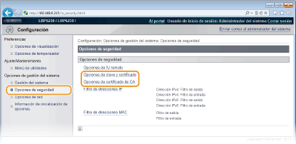
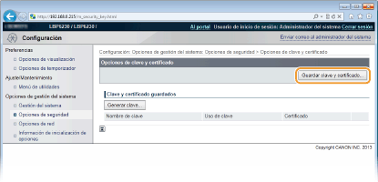
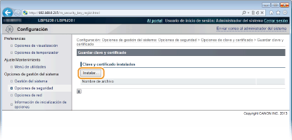
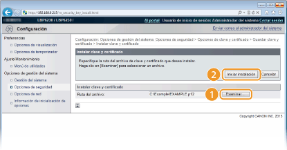
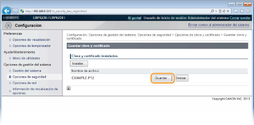
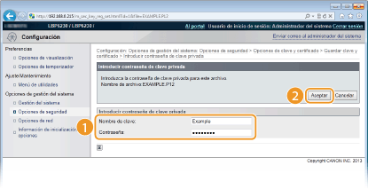
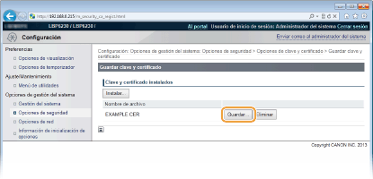

0KXF-033
Los pares de claves y los certificados digitales pueden obtenerse con la ayuda de una entidad de certificación (CA) y utilizarse con el equipo. Cuando los haya obtenido de una CA, puede instalar y registrar archivos de certificado de CA y pares de claves en el equipo utilizando el IU remoto. Asegúrese de que el par de claves y el certificado cumplan los requisitos del equipo (Requisitos operativos de claves y de certificados). Puede registrar hasta tres pares de claves y tres certificados de CA, incluidos los ya preinstalados.
1
Inicie el IU remoto e inicie sesión en modo Administrador del Sistema. Inicio del IU remoto
2
Haga clic en [Configuración].

3
Haga clic en [Opciones de seguridad]  Haga clic en [Opciones de clave y certificado] o en [Opciones de certificado de CA].
Haga clic en [Opciones de clave y certificado] o en [Opciones de certificado de CA].
Haga clic en [Opciones de clave y certificado] para instalar un par de claves o en [Opciones de certificado de CA] para instalar un certificado de CA.

4
Haga clic en [Guardar clave y certificado] o [Guardar certificado de CA].


Cómo eliminar un par de claves o un certificado de CA registrados
En la parte derecha del par de claves o del certificado de CA que desea eliminar, haga clic en [Eliminar] [Aceptar].
Los pares de claves no pueden eliminarse si "SSL" aparece en [Uso de clave], indicando que el par de claves ya se está utilizando. En este caso, desactive SSL o sustituya el par de claves por otro. Ahora ya puede eliminarlo.
5
Haga clic en [Instalar].
En este equipo solo puede instalar un archivo. Si ya hay otro archivo instalado, haga clic en [Eliminar] [Aceptar] para eliminar el archivo ya instalado.

6
Haga clic en [Examinar], especifique el archivo que desea instalar y haga clic en [Iniciar instalación].

 |
El par de claves o el certificado de CA se instalan en el equipo desde un ordenador.
|
7
Registre el par de claves o el certificado de CA.
 Registro de un par de claves
Registro de un par de claves|
1
|
Haga clic en [Guardar] en la parte derecha del par de claves que desee registrar.
 |
|
2
|
Introduzca el nombre del par de claves y la contraseña y, a continuación, haga clic en [Aceptar].
 [Nombre de clave]
Introduzca un nombre de hasta 24 caracteres alfanuméricos para registrar en el equipo el par de claves. Utilice un nombre que le resulte fácil de encontrar en una lista.
[Contraseña]
Introduzca hasta 24 caracteres alfanuméricos en la contraseña de la clave secreta establecida en el archivo que desea registrar.
|
Registro de un certificado de CAHaga clic en [Registrar] en la parte derecha del certificado de CA que desea registrar.
